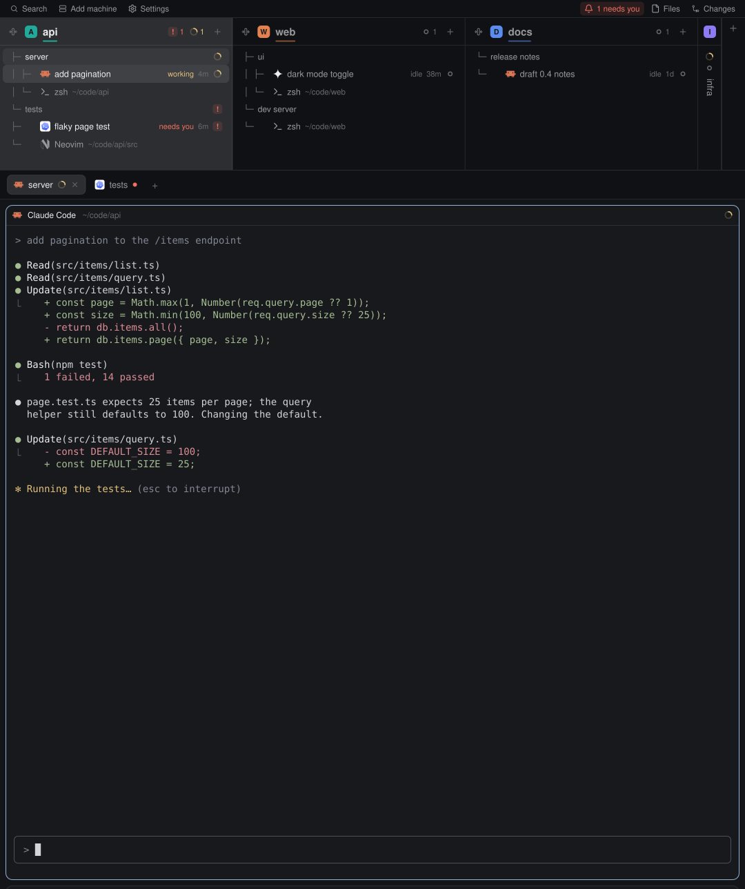

install https://github.com/miguelalexanderdiaz/herdr-portrait-layoutPortrait layout for Herdr
A Herdr layout for tall, vertical monitors. Your spaces sit side by side as columns on top, with every agent and its state, and the work area gets the rest of the screen.

Two layouts
The bar sits on top or just above the status line, and ctrl-shift-y flips between the two.
Space tree
Each space is a column of its tabs and panes, with every agent, its state and how long it has been in it.
Bar strip
The bell lights up as soon as an agent needs you, and one click takes you to it.
Side panel
Files shows the focused pane's folder with git marks, and a click opens a file in the editor you pick.
Install in one line
Tell the agent in your Herdr:
Herdr 0.1.12 or newer. No network, no account. Used on macOS; Linux and Windows are covered by the code but not yet run. Step by step on Install, what works where on Platforms, what it runs and reads on Privacy.